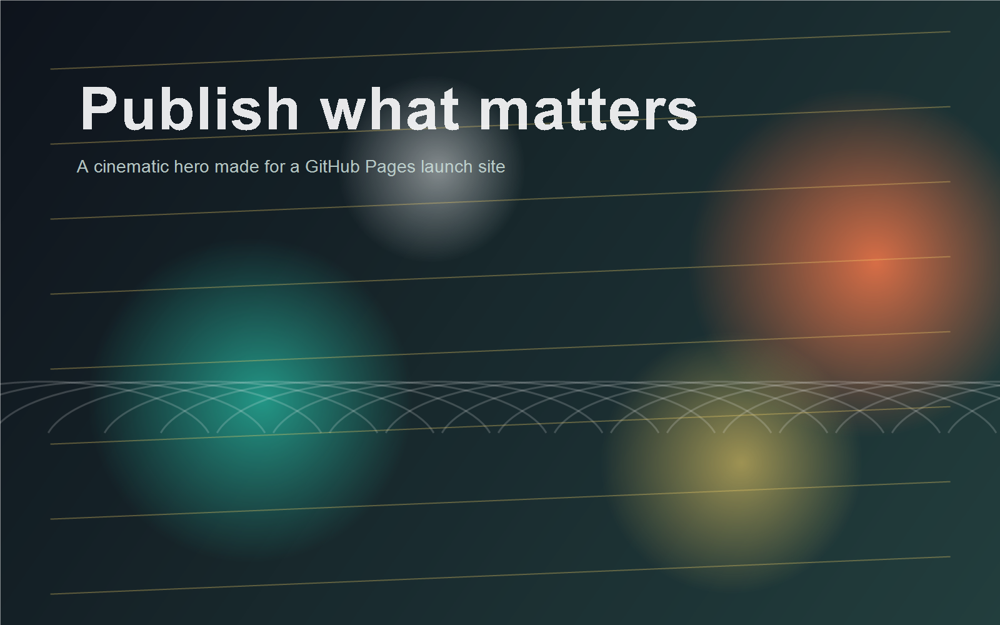

01
Editorial hero
A strong opening section, layered color, and custom artwork give the page presence without turning it into a generic template.
GitHub Pages-ready
This starter page is built for personal brands, creative studios, and side projects that need a strong first impression without a framework or deploy pipeline.

01
A strong opening section, layered color, and custom artwork give the page presence without turning it into a generic template.
02
The composition stacks cleanly on phones and keeps the most important content visible on first load.
03
Swap copy, links, colors, and the hero image directly in the static files. No tooling knowledge required.
Approach
Everything runs from plain files, which keeps GitHub Pages deployment reliable and easy to understand.
Warm coral, brass, and sea-glass tones create a distinct look that avoids the usual default landing-page palette.
Scroll reveals and responsive hover states make the page feel alive while staying lightweight.
Launch